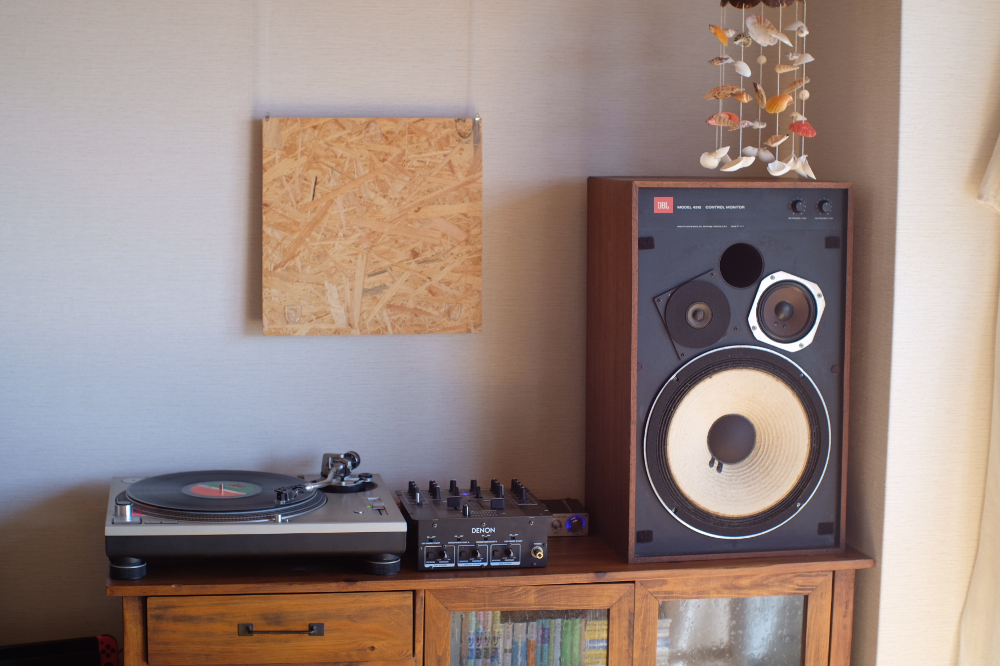

概 要

かつて「ホームセンターふじや」という、とある島で地域の暮らしを支えた小さな商店がありました。 長い年月を経た今、屋号を孫が受け継ぎ、海を渡った石と魚の町「庵治町」の旧料理民宿という異なる場所で、新しい「ふじや」として再開いたします。 この町を訪れる方や地域のみなさまに、少しでもお役に立つ存在になれれば幸いです。
道 具
硝子器、金物、荒物、美術工芸品、陶磁器、御進用品、食品など、暮らしに寄り添う品々を取り揃えています。 地元ならではのもの、長く使い続けられる丈夫なもの、時代を超えて愛される普遍的なデザインのものを中心に選んでいます。 一部の商品は、その場で実際に使い心地をお試しいただけます。
喫 茶
誰もが気軽に立ち寄れる、肩肘張らない「日本の喫茶店」です。 手回し焙煎機で焼き上げる深煎り珈琲と、親しみのある軽食をご用意しています。 目の前の海水浴場の海開き期間中は、昔ながらの「海の家」として営業します。期間中は少し力の抜けたホッとする特別メニューをご用意していつもより賑やかな雰囲気で皆様をお迎えします。 季節を問わず、浜辺で食事をお楽しみいただけるチェアリングセットもご用意しております。季節ごとに表情を変える空間を、どうぞお楽しみください。
B G M

1970年代から愛されるスタジオモニタースピーカーから出力される心地よい低音。時々レコードにも針を落とします。 いつもは穏やかに、海の家シーズンは少し賑やかに。 会話を控えたりするような気難しいルールはないので、遠慮なくゆったりしてください。 店が立地する場所は海も山も近く、美しい鳥のさえずりが聞こえてきます。外のBGMにも耳を向けてみてください。
宿 泊
ホームセンターと喫茶店に宿泊できるように準備を進めています。 お部屋は、旧料理民宿から受け継いだ「松の間」「竹の間」「梅の間」の3部屋。 ご家族やグループでゆったりお過ごしいただける一棟貸しにも対応しています。 1階の喫茶スペースは、ご宿泊中は広々とした共有リビングへ形を変えます。 ご宿泊のお客様だけにお楽しみいただける特別な食事メニューもご用意しております。暮らすように泊まり、庵治町での時間をゆっくりとお楽しみください。
案 内
香川県高松市庵治町4428番地1
鎌野海水浴場から徒歩2分
JR「高松」駅から車で約30分
駐車場 4台